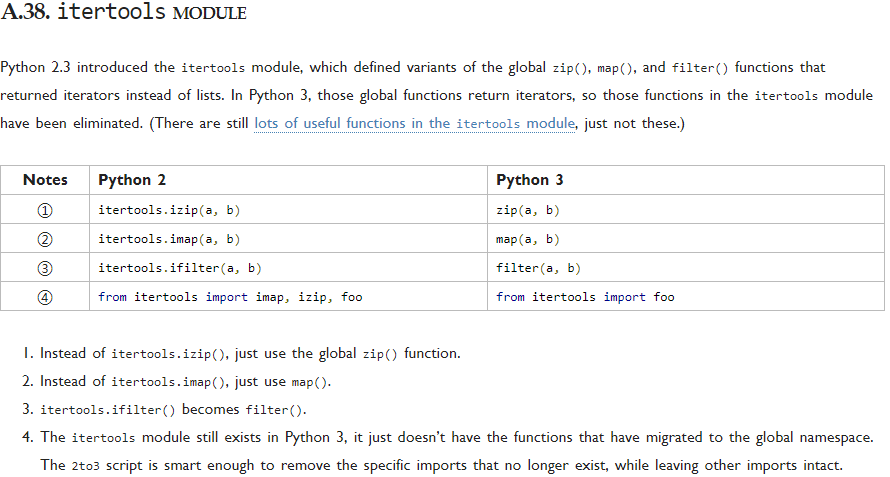
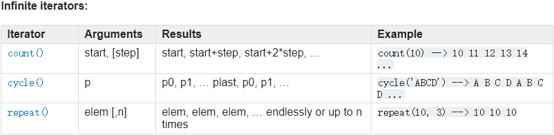
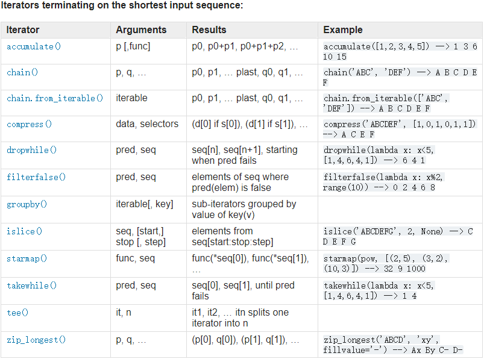
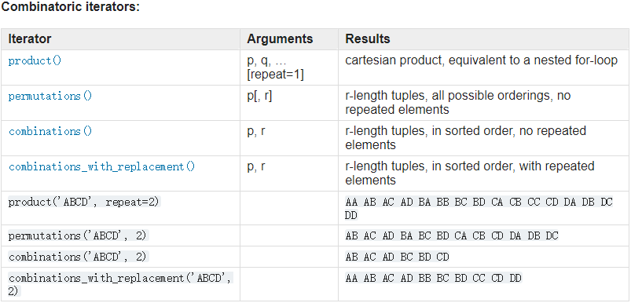

Python Itertools
高效循环创建迭代器的函数集合
文章大部分内容转载自wklken前辈的博客, 本来想自己翻译和补充官方文档的内容, 然后发现wklken前辈已经做了这件事情,只是用的Python2,所以在这里我用Python3修改整理和补充了一些内容,节省了不少时间
特别说明:
python2 to 3 关于itertools MODULE的一些改变

总览
由三部分组成:
- 无限迭代器
- 处理输入系列迭代器
- 组成生成器
无限迭代器:

处理输入序列迭代器:

组合迭代器:

思考
在没有学习迭代器之前,如果你想计算四匹马赛跑到达终点排名的所有可能性,代码该如何去写?
无限迭代器
itertools.count(start=0, step=1)
创建一个迭代器，生成从start开始的连续整数，如果忽略n，则从0开始计算(注意：此迭代器不支持长整数)
如果超出了sys.maxint，计数器将溢出并继续从-sys.maxint-1开始计算
1 | # 定义 |
itertools.cycle(iterable)
创建一个迭代器，对iterable中的元素反复执行循环操作，内部会生成iterable中的元素的一个副本，此副本用于返回循环中的重复项
1 | # 定义 |
itertools.repeat(object[, times])
创建一个迭代器，重复生成object，times（如果已提供）指定重复计数，如果未提供times，将无止尽返回该对象
1 | # 定义 |
处理输入序列迭代器
itertools.chain(*iterables)
将多个迭代器作为参数, 但只返回单个迭代器, 它产生所有参数迭代器的内容, 就好像他们是来自于一个单一的序列
1 | # 定义 |
itertools.compress(data, selectors)
提供一个选择列表，对原始数据进行筛选
1 | # 定义 |
itertools.dropwhile(predicate, iterable)
创建一个迭代器，只要函数predicate(item)为True，就丢弃iterable中的项，如果predicate返回False，就会生成iterable中的项和所有后续项
即：在条件为false之后的第一次, 返回迭代器中剩下来的项
1 | # 定义 |
itertools.groupby(iterable[, key])
返回一个产生按照key进行分组后的值集合的迭代器.
如果iterable在多次连续迭代中生成了同一项，则会定义一个组，如果将此函数应用一个分类列表，那么分组将定义该列表中的所有唯一项，key（如果已提供）是一个函数，应用于每一项，如果此函数存在返回值，该值将用于后续项而不是该项本身进行比较，此函数返回的迭代器生成元素(key, group)，其中key是分组的键值，group是迭代器，生成组成该组的所有项。
即：按照keyfunc函数对序列每个元素执行后的结果分组(每个分组是一个迭代器), 返回这些分组的迭代器
1 | # 定义 |
itertools.ifilter(predicate, iterable)
返回的是迭代器类似于针对列表的内置函数 filter() , 它只包括当测试函数返回true时的项. 它不同于 dropwhile()
创建一个迭代器，仅生成iterable中predicate(item)为True的项，如果predicate为None，将返回iterable中所有计算为True的项
对函数func执行返回真的元素的迭代器
1 | # 定义 |
itertools.ifilterfalse(predicate, iterable)
和ifilter(函数相反 ， 返回一个包含那些测试函数返回false的项的迭代器)
创建一个迭代器，仅生成iterable中predicate(item)为False的项，如果predicate为None，则返回iterable中所有计算为False的项 对函数func执行返回假的元素的迭代器
1 | # 定义 |
itertools.islice(iterable, stop)
itertools.islice(iterable, start, stop[, step])
返回的迭代器是返回了输入迭代器根据索引来选取的项
创建一个迭代器，生成项的方式类似于切片返回值： iterable[start : stop : step]，将跳过前start个项，迭代在stop所指定的位置停止，step指定用于跳过项的步幅。 与切片不同，负值不会用于任何start，stop和step， 如果省略了start，迭代将从0开始，如果省略了step，步幅将采用1.
返回序列seq的从start开始到stop结束的步长为step的元素的迭代器
1 | # 定义 |
itertools.imap(function, *iterables)
创建一个迭代器，生成项function(i1, i2, …, iN)，其中i1，i2…iN分别来自迭代器iter1，iter2 … iterN，如果function为None，则返回(i1, i2, …, iN)形式的元组，只要提供的一个迭代器不再生成值，迭代就会停止。
即：返回一个迭代器, 它是调用了一个其值在输入迭代器上的函数, 返回结果. 它类似于内置函数 map() , 只是前者在任意输入迭代器结束后就停止(而不是插入None值来补全所有的输入).
返回序列每个元素被func执行后返回值的序列的迭代器
1 | # 定义 |
itertools.starmap(function, iterable)
创建一个迭代器，生成值func(*item),其中item来自iterable，只有当iterable生成的项适用于这种调用函数的方式时，此函数才有效。
对序列seq的每个元素作为func的参数列表执行, 返回执行结果的迭代器
1 | # 定义 |
itertools.tee(iterable[, n=2])
返回一些基于单个原始输入的独立迭代器(默认为2). 它和Unix上的tee工具有点语义相似, 也就是说它们都重复读取输入设备中的值并将值写入到一个命名文件和标准输出中
从iterable创建n个独立的迭代器，创建的迭代器以n元组的形式返回，n的默认值为2，此函数适用于任何可迭代的对象，但是，为了克隆原始迭代器，生成的项会被缓存，并在所有新创建的迭代器中使用，一定要注意，不要在调用tee()之后使用原始迭代器iterable，否则缓存机制可能无法正确工作。
把一个迭代器分为n个迭代器, 返回一个元组.默认是两个
1 | # 定义 |
itertools.takewhile(predicate, iterable)
和dropwhile相反
创建一个迭代器，生成iterable中predicate(item)为True的项，只要predicate计算为False，迭代就会立即停止。
即：从序列的头开始, 直到执行函数func失败
1 | # 定义 |
itertools.izip(*iterables)
返回一个合并了多个迭代器为一个元组的迭代器. 它类似于内置函数zip(), 只是它返回的是一个迭代器而不是一个列表
创建一个迭代器，生成元组(i1, i2, … iN)，其中i1，i2 … iN 分别来自迭代器iter1，iter2 … iterN，只要提供的某个迭代器不再生成值，迭代就会停止，此函数生成的值与内置的zip()函数相同
1 | # 定义 |
itertools.izip_longest(*iterables[, fillvalue])
与izip()相同，但是迭代过程会持续到所有输入迭代变量iter1,iter2等都耗尽为止，如果没有使用fillvalue关键字参数指定不同的值，则使用None来填充已经使用的迭代变量的值
1 | # 定义 |
组成生成器
itertools.product(*iterables[, repeat])
笛卡尔积
创建一个迭代器，生成表示item1，item2等中的项目的笛卡尔积的元组，repeat是一个关键字参数，指定重复生成序列的次数
1 | # 定义 |
itertools.permutations(iterable[, r])
排列
创建一个迭代器，返回iterable中所有长度为r的项目序列，如果省略了r，那么序列的长度与iterable中的项目数量相同： 返回p中任意取r个元素做排列的元组的迭代器
1 | # 定义 |
itertools.combinations(iterable, r)
创建一个迭代器，返回iterable中所有长度为r的子序列，返回的子序列中的项按输入iterable中的顺序排序 (不带重复)
1 | # 定义 |
itertools.combinations_with_replacement(iterable, r)
创建一个迭代器，返回iterable中所有长度为r的子序列，返回的子序列中的项按输入iterable中的顺序排序 (带重复)
1 | # 定义 |
解疑
四匹马赛跑到达终点排名的所有可能性：
1 | # 用列表的值和索引分别表示4匹赛马和它们的排名 |